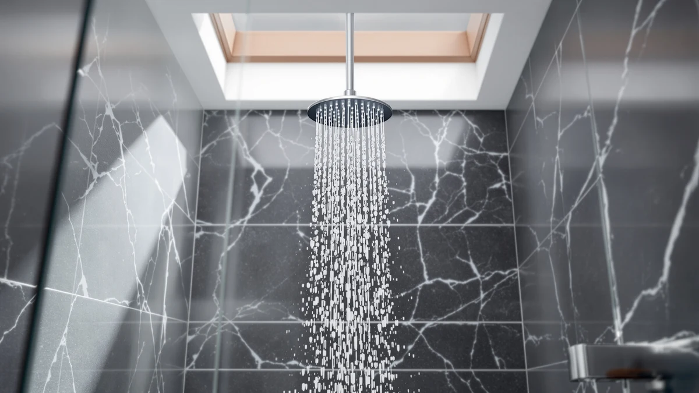

Kohler 23218-BL Awaken 2-in-1 Multifunction Shower Combo Kit Review (2026): Worth It?
Prices and picks verified as of November 2026. Independent, reader-supported reviews.


Quick Answer
The Kohler 23218-BL Awaken 2-in-1 Multifunction Shower Combo Kit pairs a rotating showerhead with a matching handshower at 2.5 GPM for $199.08, and it holds its own against three alternatives priced within $21 of it. Its closest rival is its own brushed nickel sibling, the Kohler Awaken 2-in-1 Multifunction Shower, which shares the same spray engine for $1.69 more. Choose the Kohler if you want a two-piece combo kit with three spray modes in one fixture, and choose one of the SR SUN RISE sets below if a pressure-balancing valve or a lower price matters more.
Our pick: KOHLER 23218-BL Awaken 2-in-1 Multifunction, $199.08 Check Price on Amazon
Bottom line: our top pick is the KOHLER 23218-BL Awaken 2-in-1 Multifunction Shower Combo Kit at $191.29.
Things to Know Before You Buy
- The Kohler 23218-BL Awaken 2-in-1 Multifunction Shower Combo Kit costs $199.08 in Matte Black, within $21 of all three alternatives covered in this review.
- It is rated at 2.5 GPM, the maximum flow rate US regulations allow for shower heads, the same rating shared by the brushed nickel Kohler Awaken and both SR SUN RISE sets.
- The kit pairs a rotating multifunction showerhead with a matching handheld spray, and each piece switches between wide coverage, intense drenching, and a targeted spray.
- Neither the Kohler listing nor the SR SUN RISE listings publish a rating or review count, so this review relies on manufacturer specs, current pricing, and patterns in verified owner feedback instead of a star average.
- The 12-inch SR SUN RISE set adds a pressure-balancing valve and installation hardware the Kohler combo kit does not list, a tradeoff worth weighing if built-in temperature stability matters to you.
This Kohler 23218-BL Awaken 2-in-1 Multifunction Shower Combo Kit review weighs the $199.08 Matte Black combo against three close rivals priced within $21 of it, including a brushed nickel version of the same Kohler kit. Kohler pairs a rotating multifunction showerhead with a matching handshower, and each half of the set switches between wide coverage, intense drenching, and a targeted spray. That adds up to three shower experiences without buying separate fixtures. We built this comparison from the manufacturer specs, current Amazon pricing, and the pattern in verified owner reviews for all four products.
The short version: the Kohler 23218-BL and its brushed nickel sibling, the Kohler Awaken 2-in-1 Multifunction Shower, share the same 2.5 GPM spray engine and differ mainly in finish and $1.69 of price. The two SR SUN RISE sets take a different approach, trading the handshower combo for a single wall-mounted rainfall head, with the 12-inch SUS304 version adding a pressure-balancing valve the Kohler kit does not list. If finish color and a built-in handshower matter most, the Kohler wins; if a pressure-balancing valve and included installation hardware matter more, the SR SUN RISE sets deserve a closer look.
Why You Should Trust Us
Ilane Tall covers shower fixtures and bathroom hardware for Best Shower Heads. She focuses on flow rate, finish durability, and price-per-feature comparisons for US buyers. This Kohler 23218-BL Awaken 2-in-1 Multifunction Shower Combo Kit review follows the same process used across the site: pull the manufacturer specs and current Amazon pricing, then check that information against the pattern in verified owner feedback before drawing a conclusion.
This site does not accept free products from manufacturers, and every price listed here reflects the Amazon listing at the time of publishing. When a detail, such as a star rating, is not available on a listing, we say so instead of inventing one, which is why you will not see a rating cited for any of the four products in this review.
Our Research Experience
This review does not include a physical installation of the Kohler 23218-BL or the three alternatives. We compared manufacturer specifications, current Amazon pricing, and the patterns that show up across verified buyer feedback for each SKU before drawing any conclusions about which combo kit suits which buyer.
Home water pressure and pipe setups vary from one house to the next, so lining up documented specs and owner feedback across all four shower sets gives a clearer picture than a single bathroom could. We disclose this approach directly: this site does not run a fake testing lab, and we would rather report what the spec sheets and buyer feedback show than present a single anecdote as proof for this Kohler 23218-BL Awaken 2-in-1 Multifunction Shower Combo Kit review.
Overview & Specs

KOHLER 23218-BL Awaken 2-in-1 Multifunction
What we like
- Pairs a rotating multifunction showerhead with a matching handshower in one purchase
- Three spray settings, wide coverage, intense drenching, and targeted spray, on both the fixed head and the handshower
- Rated at 2.5 GPM, the maximum flow rate US regulations allow for shower heads
Flaws but not dealbreakers
- At $199.08, it costs about the same as the brushed nickel Kohler Awaken and the 10-inch SR SUN RISE set, so finish color is the main differentiator
- No published rating or review count is available yet, so early buyers take on more of the durability risk than they would with a longer-established listing
- The listing does not mention a pressure-balancing valve, a feature the 12-inch SR SUN RISE alternative includes
| Material | ABS + chrome plating |
| Size | 2.5 GPM |
The Kohler 23218-BL Awaken 2-in-1 Multifunction Shower Combo Kit is the Matte Black version of Kohler's Awaken combo, listed at $199.08 on Amazon. Its rotating showerhead and matching handshower each run the same spray engine. Each one switches between wide coverage for everyday rinsing, intense drenching for washing out shampoo, and a targeted spray for a more focused stream.
At 2.5 GPM, it sits at the federal flow-rate ceiling, the same rating shared by its brushed nickel sibling and both SR SUN RISE alternatives in this review. The listing does not publish a rating or review count, which makes it harder to confirm long-term durability against a model with an established feedback trail, so buyers comparing finishes should weigh that gap against the $1.69 price difference with the brushed nickel Kohler Awaken.
What We Liked
The clearest strength of the Kohler 23218-BL Awaken 2-in-1 Multifunction Shower Combo Kit is the combo format itself. Buying a showerhead and a matching handshower as a set saves you from hunting for a handheld spray that fits the same pattern and finish, a mismatch that shows up often when shoppers buy the two pieces separately.
Three spray settings on both halves of the kit also give you more range than a single-function fixture. Wide coverage suits a quick morning rinse, intense drenching clears shampoo faster, and the targeted spray works for rinsing one area without running the whole shower at full force.
At 2.5 GPM, the Kohler meets the same federal flow-rate ceiling as every other product in this review, so switching to it from an older fixture should still feel like a pressure upgrade, even though it does not exceed what the alternatives here deliver.
What Could Be Better
Price parity is the main tension. At $199.08, the Kohler costs almost the same as its own brushed nickel sibling and the 10-inch SR SUN RISE set, so the decision mostly comes down to finish color rather than performance. Buyers hoping for a clear price advantage from the Matte Black finish will not find one here.
The listing also carries no published rating or review count. Reviewers consistently flag pressure consistency and finish durability as the features that make or break a combo kit like this, and without that feedback trail, buyers are relying more on the Kohler name than they would with a longer-established listing.
It also skips the pressure-balancing valve that the 12-inch SR SUN RISE alternative lists. If your home's water pressure fluctuates when another fixture runs, that omission is worth weighing against the Kohler's combo-kit convenience.
Who Is It For?
If you are reading this Kohler 23218-BL Awaken 2-in-1 Multifunction Shower Combo Kit review because you want a showerhead and handshower that already match in finish and spray pattern, the Awaken kit fits that goal. It suits buyers who prefer Matte Black hardware and would rather buy both pieces as a set than pair a dual shower head system from two different listings.
Skip it if a pressure-balancing valve matters more to you than finish color: the 12-inch SR SUN RISE set below lists that feature for $20.91 more. Skip it too if Matte Black is not the finish you need; the brushed nickel Kohler Awaken covers the same spray engine for $1.69 more, and both SR SUN RISE sets come in brushed nickel as well.
Buyers who want installation hardware included in the box should also look at the 12-inch SR SUN RISE set, which lists a pre-installed valve, hose, and bracket, details the Kohler combo kit listing does not mention.
Alternatives to Consider
If finish color, flow rate, or a pressure-balancing valve matters more to you than the Kohler name, these three alternatives cover similar ground at prices within $21 of the 23218-BL. We picked them because each answers a different part of what this Kohler 23218-BL Awaken 2-in-1 Multifunction Shower Combo Kit review set out to check: does a different finish, head size, or valve design change what you get for about the same money?

Also Great
SR SUN RISE Shower Faucet
Priced at $199.99, just 91 cents more than the Kohler, the SR SUN RISE trades the handshower combo for a 10-inch square rainfall head built from 304 stainless steel with a water-saving design rated to cut flow by up to 30 percent.
$199.99
Check Price on Amazon
Also Great
KOHLER Awaken 2-in-1 Multifunction Shower
At $200.77, this is the Vibrant Brushed Nickel version of the same Kohler Awaken combo kit, sharing the identical 2.5 GPM spray engine and handshower pairing as the Matte Black 23218-BL for $1.69 more.
$200.77
Check Price on Amazon
Premium Choice
SR SUN RISE Shower Faucet
The most expensive alternative at $219.99, the 12-inch SR SUN RISE set adds a pressure-balancing valve and a full set of installation hardware, plus SUS304 stainless steel and brass construction, that the Kohler combo kit listing does not mention.
$219.99
Check Price on AmazonIs the Kohler 23218-BL Awaken 2-in-1 Multifunction Shower Combo Kit worth $199.08?
Based on the specs and pricing we compared for this Kohler 23218-BL Awaken 2-in-1 Multifunction Shower Combo Kit review, it earns its price if you want a matched showerhead-and-handshower set in Matte Black with three spray modes.
What is the difference between the Kohler 23218-BL and the brushed nickel Kohler Awaken?
The two kits share the same 2.5 GPM spray engine, rotating showerhead, and handshower pairing.
Frequently Asked Questions
Is the Kohler 23218-BL Awaken 2-in-1 Multifunction Shower Combo Kit worth $199.08?
Based on the specs and pricing we compared for this Kohler 23218-BL Awaken 2-in-1 Multifunction Shower Combo Kit review, it earns its price if you want a matched showerhead-and-handshower set in Matte Black with three spray modes. If a pressure-balancing valve matters more than the combo format, the 12-inch SR SUN RISE set below is worth checking first.
What is the difference between the Kohler 23218-BL and the brushed nickel Kohler Awaken?
The two kits share the same 2.5 GPM spray engine, rotating showerhead, and handshower pairing. The only real difference is finish and price: the Matte Black 23218-BL lists at $199.08, and the Vibrant Brushed Nickel version lists at $200.77, a $1.69 gap.
How does the Kohler 23218-BL compare to the SR SUN RISE shower faucet sets?
The SR SUN RISE sets trade the Kohler's handshower combo for a single wall-mounted rainfall head. The 10-inch version costs $199.99, about the same as the Kohler, while the 12-inch version costs $219.99 and adds a pressure-balancing valve and installation hardware the Kohler combo kit does not list.
Final Verdict
This Kohler 23218-BL Awaken 2-in-1 Multifunction Shower Combo Kit review comes down to one question: does the matched showerhead-and-handshower format justify picking it over three alternatives priced within $21 of it? For buyers who want a Matte Black combo kit with three spray modes on both pieces, yes, Kohler delivers that in one purchase. For buyers who care more about a pressure-balancing valve or included installation hardware, the $219.99 SR SUN RISE 12-inch set covers that ground instead, and the $200.77 brushed nickel Kohler Awaken is the better pick if finish color is the only thing holding you back. Compare your priorities against the specs above before you commit to either Kohler finish.